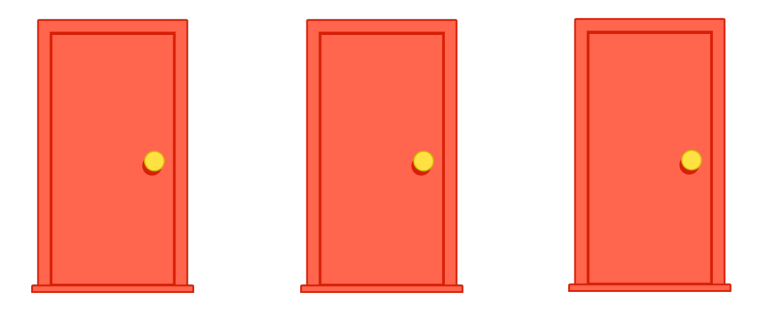
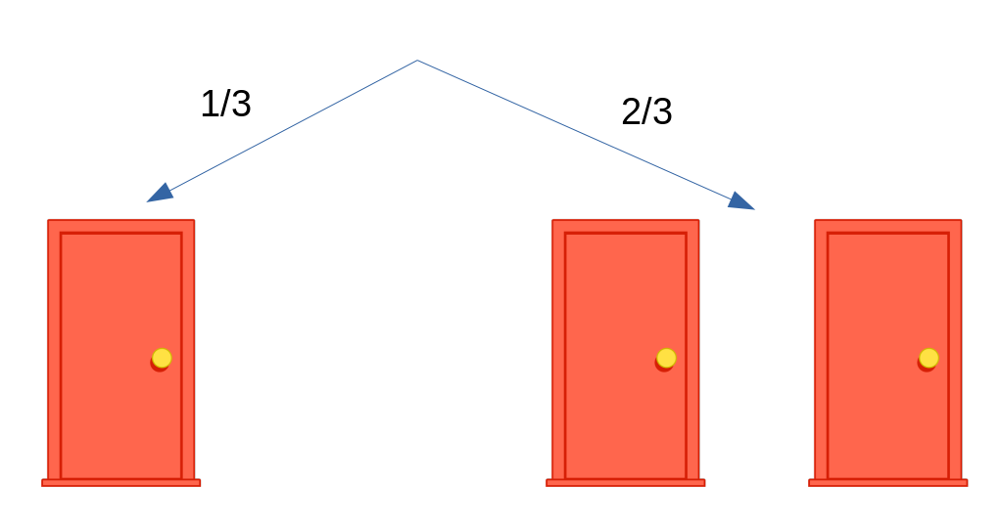
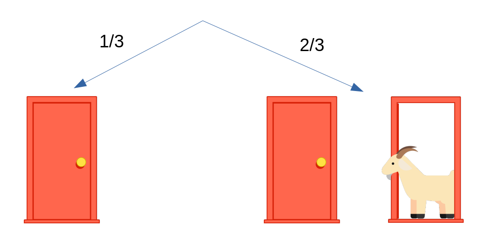
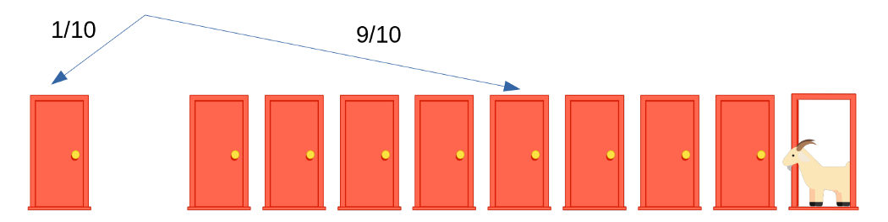
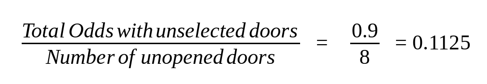

Парадокс вперше був сформульований американським математиком Стівом Селвином ще в 1975 році, але широкої популярності він набув завдяки популярному ігровому шоу "Давайте укладемо угоду". На честь ведучого цієї телевікторини, якого звали Монті Холл, парадокс і отримав свою назву.
У чому ж суть парадоксу Монти Холла?
Уявіть, що перед вами три двері, як показано на малюнку нижче. За двома дверима знаходяться кози, за однією - автомобіль. Потрібно вгадати де автомобіль, і він ваш.
У своїй передачі, після того, як учасник зробив вибір, Монти завжди відкривав одну з дверей з козою і пропонував йому поміняти свій вибір. А ви поміняли б або ні?
Це питання багатьох ставить у глухий кут. Люди зазвичай думають: "Ну яка різниця: залишилися двоє дверей, і машина може з з однаковою ймовірністю 50% виявитися як за одними, так і за іншими дверима"?. . І виявляються неправі. Правильна відповідь - завжди міняти початковий вибір. Поступаючи так, ви подвоюєте свої шанси на перемогу.
Отже, ви вибрали одну з трьох дверей. Імовірність того, що машина виявиться саме за нею, становить 1/3. А ймовірність того, що вона виявиться за однією з двох, що залишилися (тобто не обраних вами) дверей, буде 2/3.
Тепер Монті відкриває одну з невибраних дверей - тих, що справа. І відкриває він завжди ту, за якою коза.
Припустимо, Монті хоче ускладнити для вас завдання і відкриває лише одні двері з правого боку. Що ви будете робити тепер: виберіть одну з восьми закритих дверей праворуч або не станете міняти свій вибір?
Тут доведеться дещо порахувати. Імовірність того, що машина виявиться за однією з дев'яти дверей праворуч, дорівнює 9/10. Розділимо її на кількість дверей, що залишилися невідкритими.
Це буде ймовірність того, що машина виявиться за однією з восьми дверей, що залишаються закритими, справа. І вона трохи більше ймовірність 0,1(1/10), що спочатку вибрані вами двері ліворуч виявляться з машиною. Тому вам все ж прийнятніше поміняти свій вибір, хоча шанси виграти машину і в цьому випадку будуть дуже низькими. По цій же формулі можна порахувати ймовірність для будь-якої кількості невідкритих дверей.